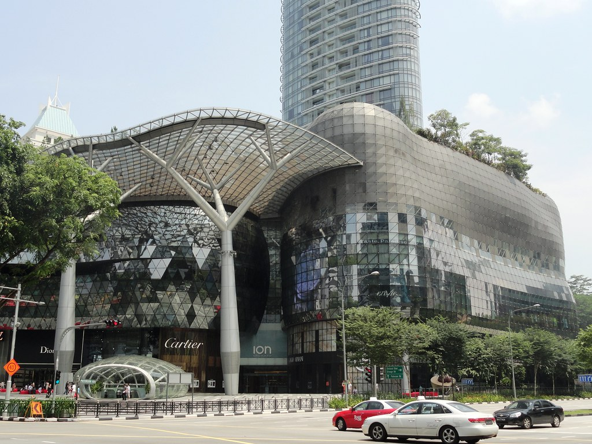
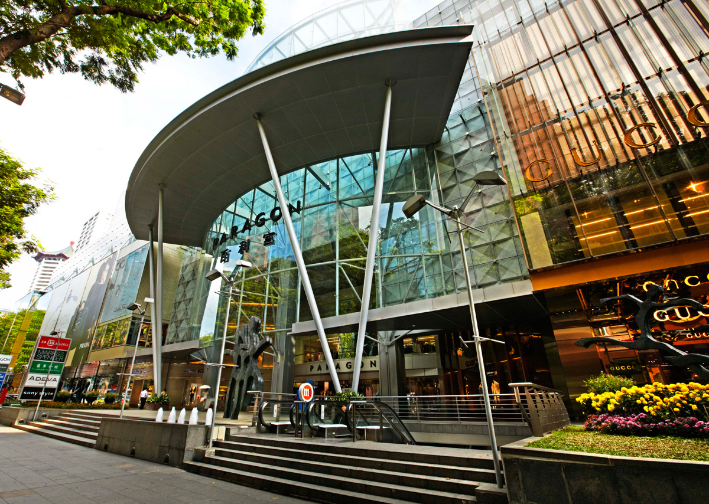
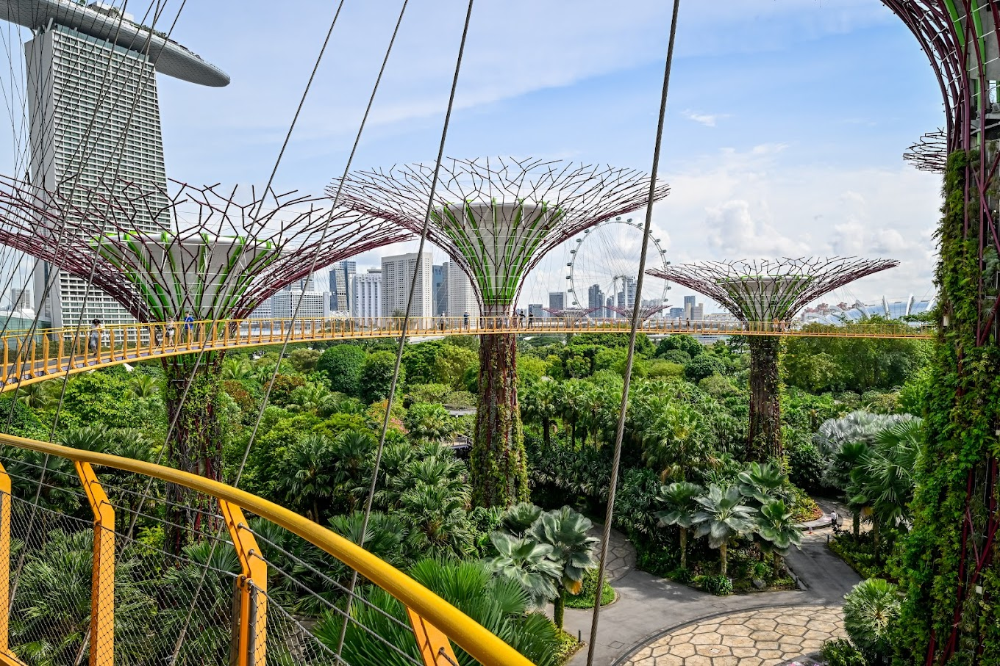
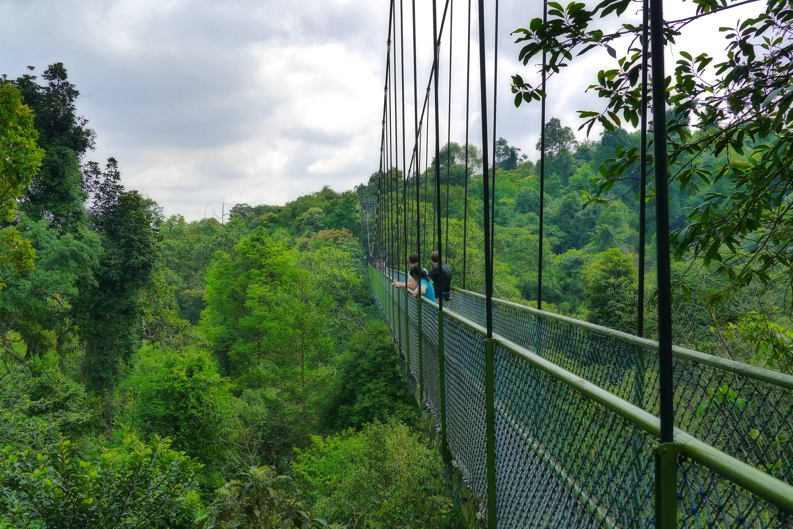
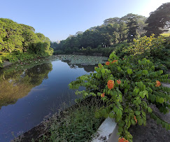

Activities
Things to Do
Singapore offers a variety of activites. While we may not be known for relaxing beaches. We do have stunning wildlife, a bustling city, intricate architecture, fun events, and a wide range of historical buildings.
ION Orchard
One of the best recognized malls in Singapore due to its Unique Architecture and its total of eight floors dedicated to shopping, half of them built under Ground level. The mall is home to a combination of luxury retail stores and budget brands that each have designated floors dedicated to them. Houses an observatory on the 56th floor of the building that offers fantastic views of the Orchard road below
Paragon Shopping Center
Home to close to 200 shops and boutique stores. From high end brands like Burbery and Prada, to high street fashion labels like Zara and H&M, the Paragon Shopping Center has something for every kind of shopper.
Gardens By The Bay Park
Gardens By The Bay is a park located beside the Marina Sands Bay Resort. The park is a host for many events, light shows, and festivels. The towering artifical trees are covered in neon like lights which are beautiful at night. There's always something to look forward to here.
Central Catchment Nature Reserve
Singapore's largest nature reserve having more than 2,000 hectares of forest and over 20 km of trails, including the TreeTop Walk, around the MacRitchie Reservoir.
Admiralty Park
A national park in Singapore that is 27 hectares in size made unique by its river valley shaped hilly terrain. Has a nature area spanning 20 hectares in size, being the biggest nature area within a park in Singapore. Much of the park is in a mangrove swamp.